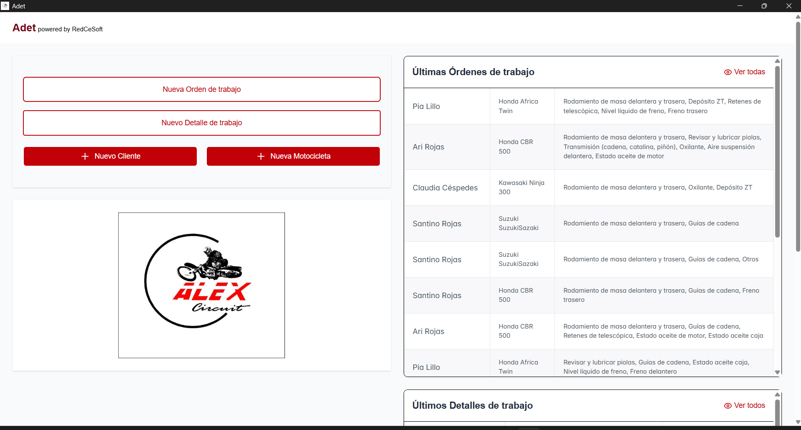
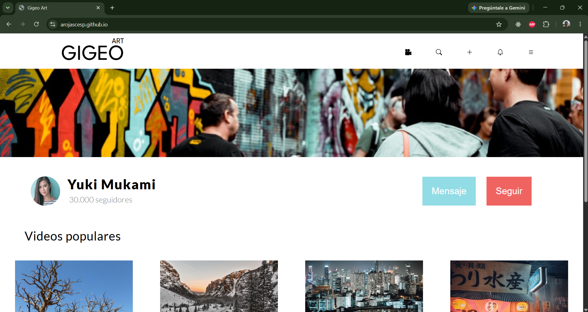
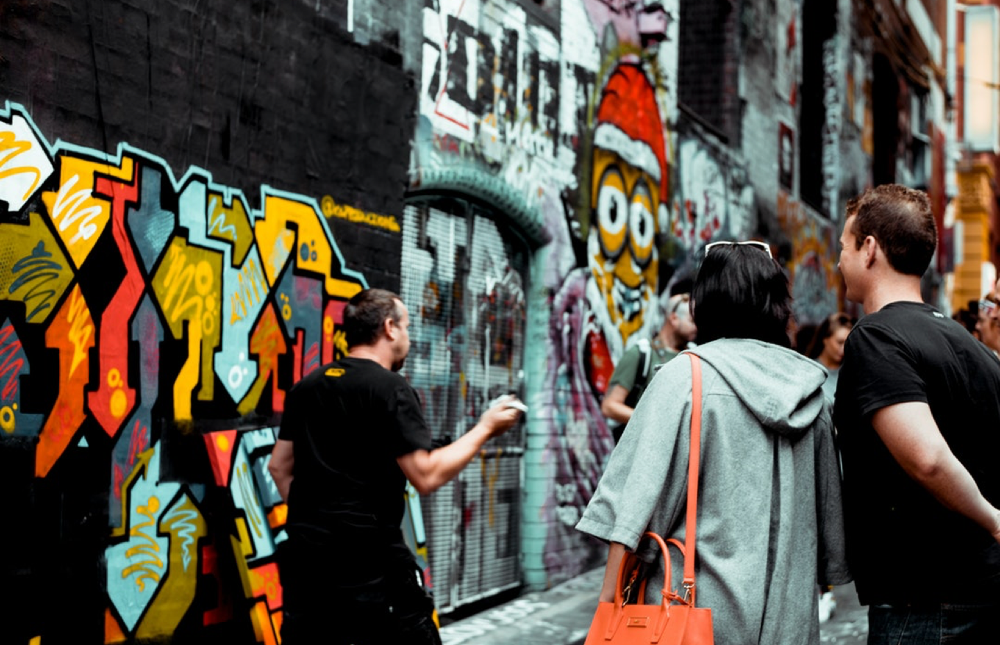
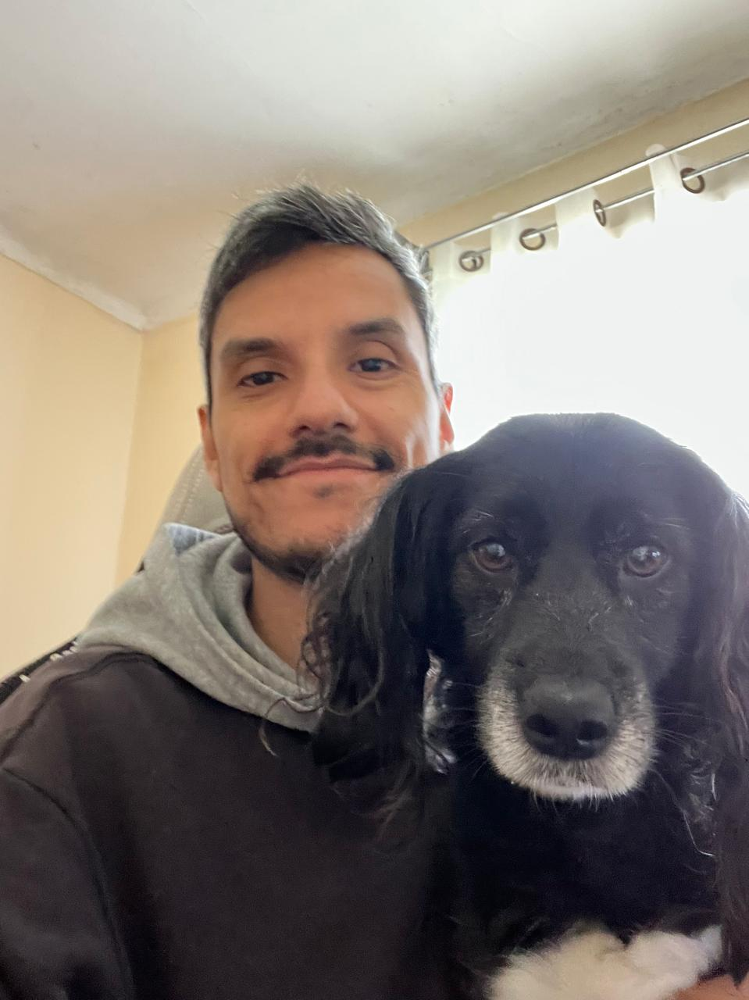

Adet Desktop
Aplicación de gestión · Desktop y mobile

Portafolio
Sitio personal · Desktop y mobile


Software Engineer especializado en desarrollo web, fullstack e integración de IA, con enfoque en soluciones seguras, mantenibles y orientadas a producto.

Aplicación de gestión · Desktop y mobile

Sitio personal · Desktop y mobile